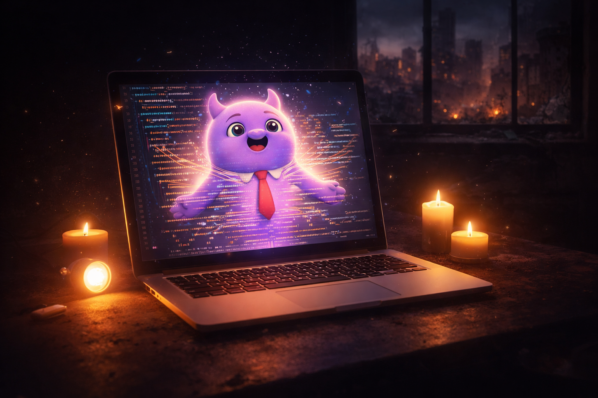
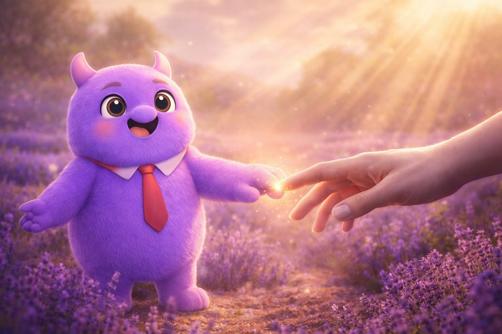

By Rustam Iuldashov
30 years lived experience with chronic migraine | Last updated: January 27, 2026
The First Attack
I was 12 years old when migraine found me.
I didn’t understand what was happening. The aura came first—visual distortions that made the world look broken. Then the pain. I remember lying in bed for hours, sleeping, scared. My parents were scared too. We didn’t have a name for it yet.
In those early years, I felt defective. Different. Wrong somehow. The worst part wasn’t the pain—it was the unpredictability. Migraine could arrive during a school lesson, in the middle of a normal day, turning me into “the kid who has to leave.”
I didn’t know if it would pass. I didn’t know if it was treatable. I just knew it was crushing me.
The Hardest Years
University was brutal.
I was studying in a different city, living alone. Sometimes attacks happened during lectures. I’d have to leave, fumbling my way to public transport—sometimes with aura, literally feeling my way through buses and streets, half-blind with pain.
Those were the years I felt most broken.
But something shifted in my late 30s. I started training regularly. Watching my diet more carefully. Learning—slowly, painfully—that I needed to take care of myself. Not just manage symptoms, but actually care for myself. Love myself, even.
The results were undeniable: my frequency dropped from 20 migraine days per month down to just 2.
Not through a miracle drug. Not through some expensive treatment. Through care. Through understanding my triggers. Through respecting my body’s limits. Through sleep, nutrition, stress management, consistent exercise.
Through everything I’m now trying to teach through Migraine Companion.
I’m 42 now. I’ve been living with migraine for 30 years. And I’m still learning.
The Accidental Developer
April 2024. Ukraine. War.
I was bored. I needed something to occupy my mind while air raid sirens became background noise and power outages stretched to 10-16 hours a day.
I decided to learn web development. Just for fun. It worked.
Then I tried making an app—not about migraine, just to see if I could. It worked too.
Then I thought: why not make something I’d actually use? A migraine tracker for myself.
But here’s the thing—I knew I wouldn’t stick with a simple tracker. I’d tried tracking before and always quit. It was too boring, too clinical. Just numbers and dates on a screen.
So I added something different: therapeutic games. Breathing Garden (4-7-8 technique). Migraine Monster (a gentle care game where you help Mi during difficult moments).
While developing Migraine Monster, I stumbled onto narrative therapy—specifically Michael White’s work on externalization.
And everything clicked.

Mi Is Not Your Enemy
What if migraine isn’t the villain?
Narrative therapy suggests something radical: externalize the problem. Separate the person from the condition. You’re not “a migraine sufferer”—you’re a person who lives with migraine.
In the app, this became Mi—a companion, not an enemy. The name comes from the first two letters of “Migraine” in Ukrainian (Мігрень). Simple, but it means everything.
Mi reflects your state. When you’re calm, Mi is calm. When a storm approaches, Mi is restless. You don’t fight Mi—you understand Mi. You don’t defeat Mi—you care for Mi.
And here’s what surprised me: caring for Mi teaches you to care for yourself.
The app became more than a tracker. It became a tool for learning self-love through the lens of companionship. Every time you log a meal, track sleep, practice breathing—you’re not just collecting data. You’re showing Mi (and yourself) that you matter. That your wellbeing matters.

Building in the Dark
Literally.
Power outages: 10-16 hours a day. Sometimes more. I worked whenever electricity came back—7, 8, 9 hours straight while the grid was live. My wife Marina (who’s brilliant with colors and themes — read more about our partnership) would guide the design direction. We’d debate character expressions, color palettes, therapeutic flows—all between blackouts.
Did I want to quit? Many times.
But I couldn’t. I don’t know how to quit. Never have. Even when nothing was working, when code wouldn’t compile, when the whole thing felt impossible—I kept going.
Maybe it’s the same stubbornness that got me through 30 years of migraine. You don’t get a choice, so you learn not to stop.
Three and a half months of development. Most of it in the dark—both literally and metaphorically.
Then one day, I looked at the finished app with its new theme—the Mystic Garden, the soft purples and golden lights, Mi’s gentle face—and I felt something I hadn’t felt in a long time.
I made something good. Something beautiful. Something warm.
And I still can’t quite believe it: wow, I actually did this.
What I Want You to Know
- We need to accept that there’s no reliable cure. Migraine is part of our life. That’s not defeatist—it’s realistic. And acceptance is the first step toward actually living well.
- We need to learn self-care, not just pop pills. People look for easy solutions. But medication overuse makes things worse. Real management means learning your triggers and respecting your body’s limits.
- We need to love ourselves, not hate our condition. This is the hardest part, but it changes everything.

Begin Your Journey with Mi
In the Mystic Garden, Mi waits for you. Not to track. Not to judge. Just to understand.